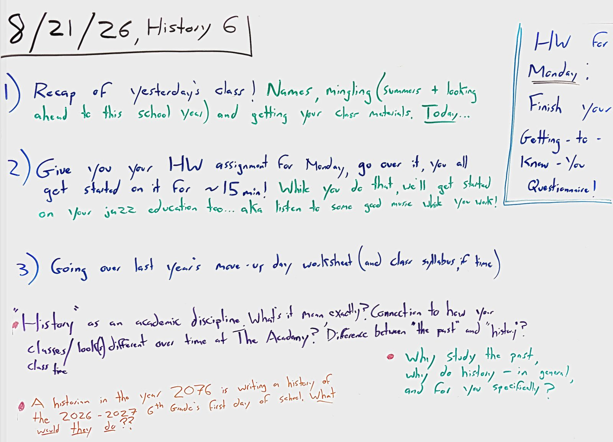
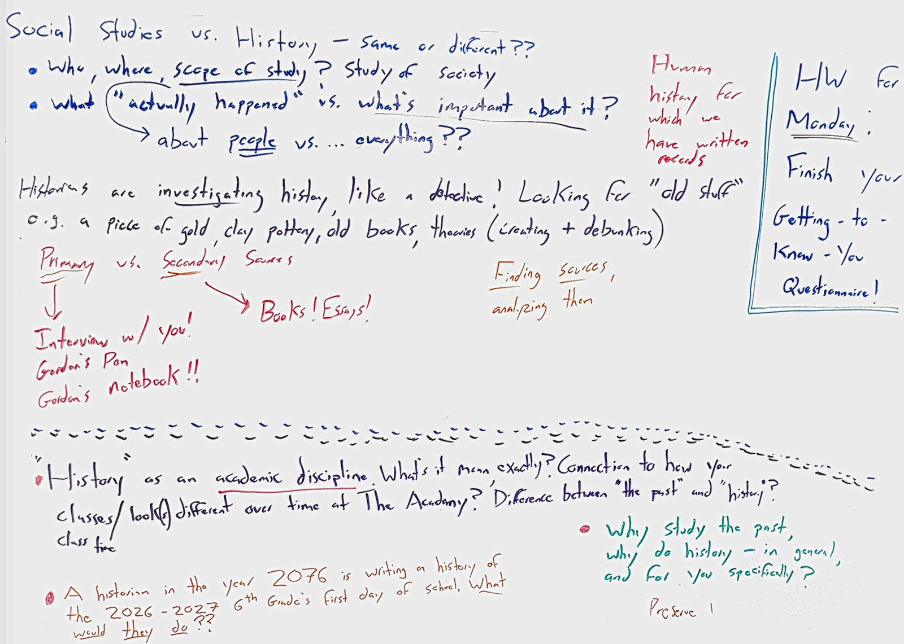

Friday, 8/21/26 MOST RECENT CLASS


Summary Of Class
Day two! You got your first homework — finish the getting-to-know-you questionnaire for Monday — and started it in class while beginning your jazz education (good music while you work). Then we dug into the big questions from May's move-up-day worksheet: social studies vs. history, what historians actually do (investigating like detectives — old stuff, from clay pottery to Gordon's notebook), primary vs. secondary sources, and what a historian in 2076 writing about your first day of school would need.
Homework: due Monday!
Finish your Getting-to-Know-You Questionnaire!
Board As Text
8/21/26, History 6 — Board 1 (agenda)
HW for Monday: Finish your Getting-to-Know-You Questionnaire!
1) Recap of yesterday's class! Names, mingling (summers + looking ahead to this school year) and getting your class materials. Today...
2) Give you your HW assignment for Monday, go over it, you all get started on it for ~15 min! While you do that, we'll get started on your jazz education too... aka listen to some good music while you work!
3) Going over last year's move-up day worksheet (and class syllabus, if time)
— "History" as an academic discipline. What's it mean, exactly? Connection to how your classes/class look(s) different over time at The Academy? Difference between "the past" and "history"?
— A historian in the year 2076 is writing a history of the 2026-2027 6th Grade's first day of school. What would they do??
— Why study the past, why do history – in general, and for you specifically?
Board 2 (discussion notes)
Social Studies vs. History – same or different??
— Who, where, scope of study? Study of society
— What ("actually happened") vs. what's important about it? → about people vs. ... everything??
Human history = for which we have written records
Historians are investigating history, like a detective! Looking for "old stuff" e.g. a piece of gold, clay pottery, old books, theories (creating + debunking)
Primary vs. Secondary Sources → (primary): Interview w/ you! Gordon's Pen, Gordon's notebook!! → (secondary): Books! Essays!
Finding sources, analyzing them
Preserve!